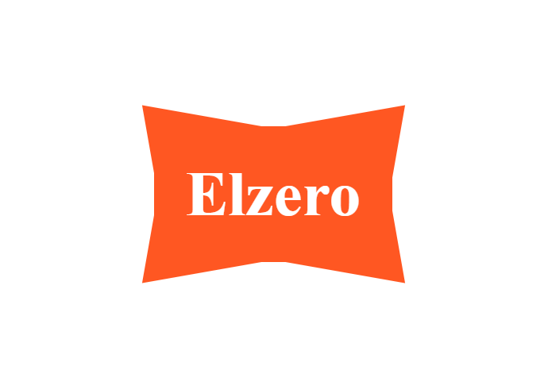

HTML مأخوذ من المعاينة المحلية
<section class="task"><h2>Task 01</h2><div class="stage"><div class="shape">Elzero</div></div></section>ELZERO · CSS ASSIGNMENT 01
المطلوب والحل والفكرة ومعاني الرموز وشرح الأسطر في صفحة مستقلة.
<section class="task"><h2>Task 01</h2><div class="stage"><div class="shape">Elzero</div></div></section>استخدم البنية السابقة، واجعل عرض العنصر 150px، ووسّطه أفقيًا، وعرّف اللون الأساسي بمتغير CSS. طابق الشكل والألوان المرجعية.
صورة السؤال:

تستخدم المقارنة البنية الواردة في السؤال أو معاينة المجموعة المحفوظة. راجع نص المطلوب للتحقق من القيم المحددة.
CSS
.shape {
--main-color: #ff5722;
width: 150px;
height: 140px;
margin-inline: auto;
display: grid;
place-items: center;
color: white;
background: var(--main-color);
clip-path: polygon(0 0, 50% 13%, 100% 0, 91% 50%, 100% 100%, 50% 87%, 0 100%, 9% 50%);
}يقص clip-path الزوايا للداخل والخارج لتكوين شكل الساعة الرملية الظاهر. المتغير --main-color يحقق شرط تحديد اللون الأساسي من قيمة واحدة. العرض في الصورة المرجعية يقارب 210px؛ صفحة التكليف النصية تذكر 150px، لذا اعتمدت 150px في ملاحظة السؤال وأبقيت قيمة المثال توضيحية.
.shapeيستهدف العناصر التي تحمل اسم الصنف المحدد.
--main-colorتحدد قيمة الخاصية --main-color. مثال القيمة: #ff5722
widthتحدد عرض العنصر. مثال القيمة: 150px
heightتحدد ارتفاع العنصر. مثال القيمة: 140px
margin-inlineتضيف مسافة على جانبي العنصر. مثال القيمة: auto
displayتحدد طريقة عرض العنصر. مثال القيمة: grid
place-itemsتختصر محاذاة Grid. مثال القيمة: center
colorتحدد لون النص. مثال القيمة: white
backgroundتضبط الخلفية. مثال القيمة: var(--main-color)
clip-pathتحدد قيمة الخاصية clip-path. مثال القيمة: polygon(0 0, 50% 13%, 100% 0, 91% 50%, 100% 100%, 50% 87%, 0 100%, 9% 50%)
var()تستدعي قيمة متغير CSS مثل --main-color.
polygon()ترسم شكلًا متعدد الأضلاع من نقاط إحداثية، غالبًا مع clip-path.
pxوحدة بكسل CSS.
{يفتح مجموعة التصريحات.
}يغلق مجموعة التصريحات.
:يفصل الخاصية عن القيمة.
;ينهي تصريح CSS.
,يفصل بين محددات أو قيم.
CSS
.shape {
--main-color: #ff5722;
width: 150px;
height: 140px;
margin-inline: auto;
display: grid;
place-items: center;
color: white;
background: var(--main-color);
clip-path: polygon(0 0, 50% 13%, 100% 0, 91% 50%, 100% 100%, 50% 87%, 0 100%, 9% 50%);
}الكود الكامل ثابت في العمود الأيسر أثناء التمرير، وكل سطر مشروح على حدة.
.shape {يستهدف العناصر التي تحمل اسم الصنف المحدد.
--main-color: #ff5722;تحدد قيمة الخاصية --main-color. والقيمة هنا #ff5722.
width: 150px;تحدد عرض العنصر. والقيمة هنا 150px.
height: 140px;تحدد ارتفاع العنصر. والقيمة هنا 140px.
margin-inline: auto;تضيف مسافة على جانبي العنصر. والقيمة هنا auto.
display: grid;تحدد طريقة عرض العنصر. والقيمة هنا grid.
place-items: center;تختصر محاذاة Grid. والقيمة هنا center.
color: white;تحدد لون النص. والقيمة هنا white.
background: var(--main-color);تضبط الخلفية. والقيمة هنا var(--main-color).
clip-path: polygon(0 0, 50% 13%, 100% 0, 91% 50%, 100% 100%, 50% 87%, 0 100%, 9% 50%);تحدد قيمة الخاصية clip-path. والقيمة هنا polygon(0 0, 50% 13%, 100% 0, 91% 50%, 100% 100%, 50% 87%, 0 100%, 9% 50%).
}يغلق نطاق القاعدة التي بدأها المحدد.